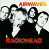

Airwaves
Hawk - HAWK82
Tracks 1-8 from National Bowl, Milton Keynes, England 30/Jul/95
<1> My Iron Lung
<2> Bones
<3> Anyone Can Play Guitar
<4> High & Dry
<5> Fake Plastic Trees
<6> Planet Telex
<7> Just
<8> The Bends
Tracks 9-17 from The Colston Hall, Bristol "Sound City", England 19/Apr/95
<9> The Bends
<10> Just
<11> Anyone Can Play Guitar
<12> Bones
<13> High & Dry
<14> Street Spirit [Fade Out]
<15> Fake Plastic Trees (not listed)
<16> Planet Telex
<17> My Iron Lung
Type of recording : Radio Broadcast
Quality : Milton Keynes - Very Good, Bristol - Good
Notes : During track 12, the sound shifts towards the right speaker, and slowly
drifts back. Sound is jumbled in parts of the Bristol concert, especially during track 9, sounds a bit
like a tape being chewed up.
Rating : ****